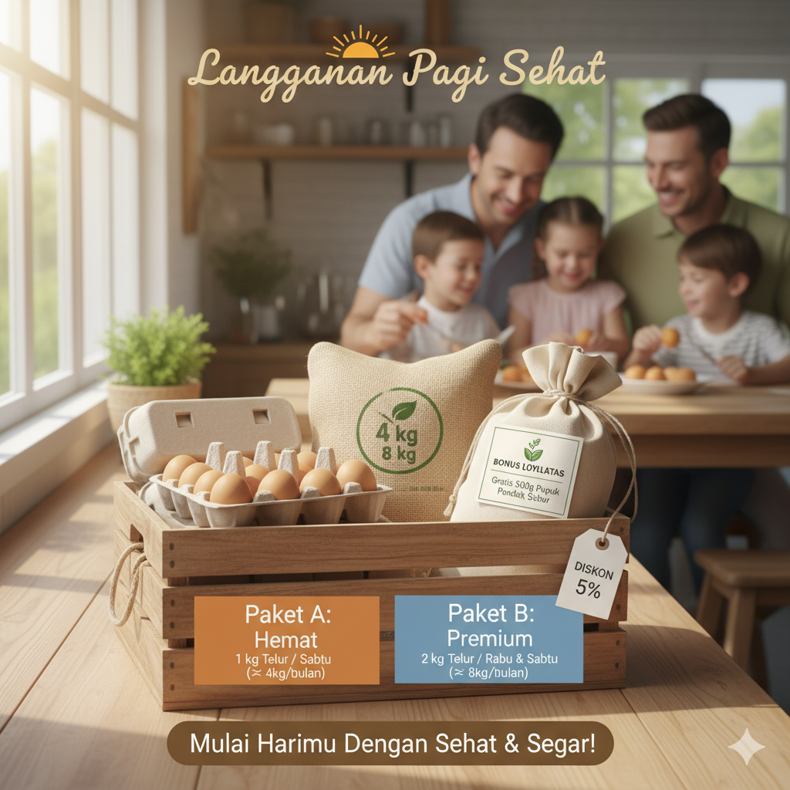
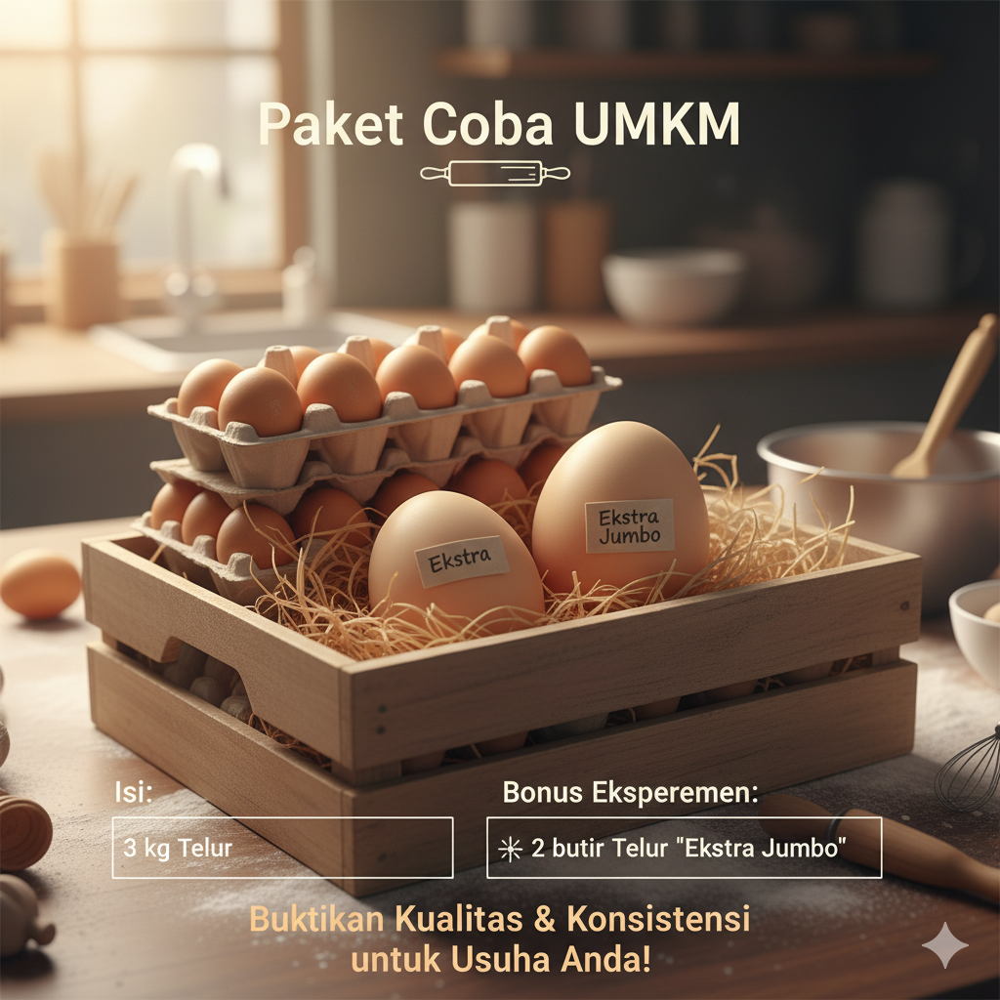
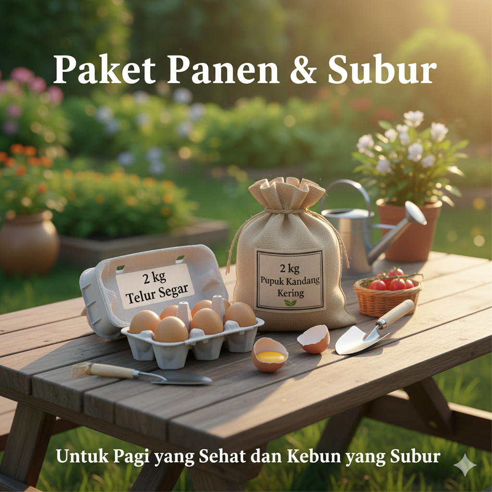
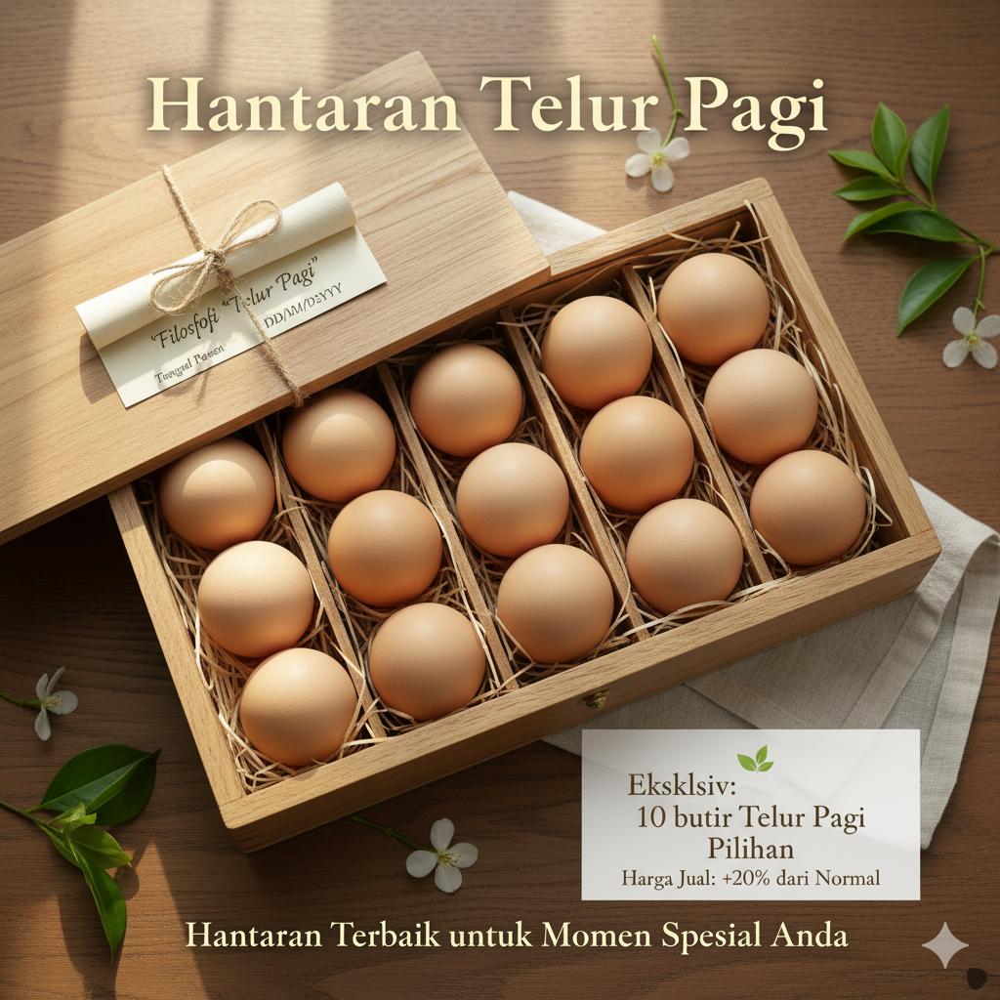
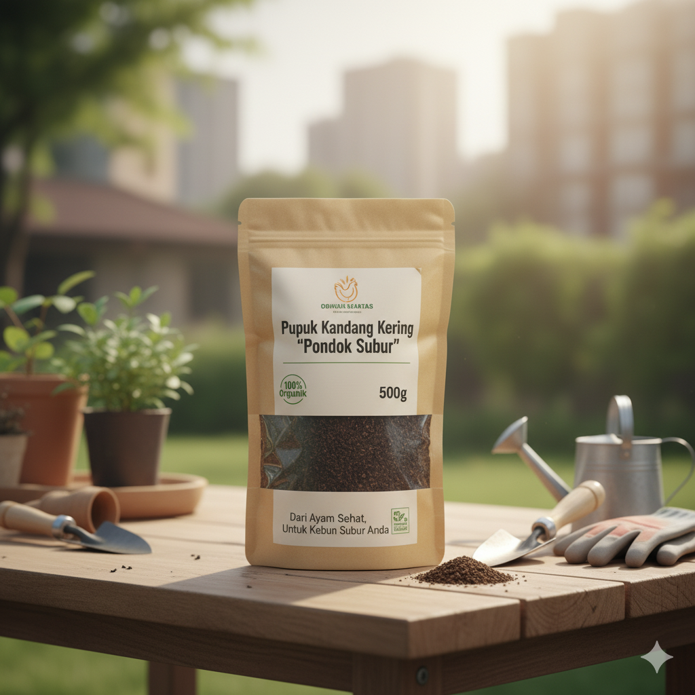
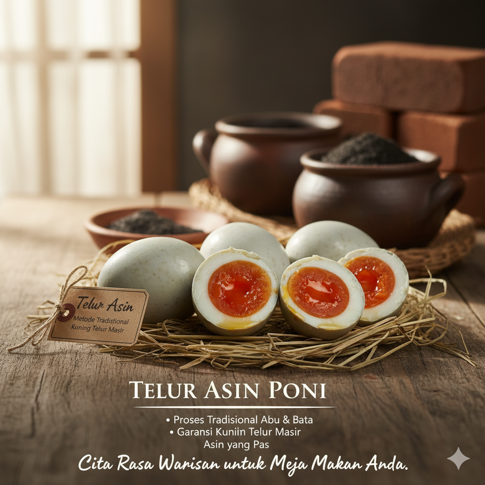

Pondok Telur Pagi fokus pada penyediaan telur ayam ras premium dengan jaminan kesegaran maksimal. Kami adalah usaha mikro yang berkomitmen pada praktik agribisnis berkelanjutan di Tasikmalaya.
Telur Ayam Ras Segar Harian (Premium Quality).
Mengadopsi sistem Kemitraan Full Set (Teluria) untuk memulai produksi cepat.
Menerapkan konsep Zero-Waste: Kotoran diolah menjadi Pupuk Kandang Kering.
Lokasi Operasional: Kp. Tejamaya, Kab. Tasikmalaya. Disusun oleh Ajria Jundan, Oktober 2025.
Dapatkan telur segar, produk olahan, dan pupuk organik terbaik yang dibuat dengan komitmen keberlanjutan.

Jaminan stok telur segar harian. Bonus: Diskon 5% dan gratis 500g Pupuk Pondok Subur setiap bulan.

Paket ideal untuk pemilik warung sarapan atau *home baker* untuk menguji kualitas telur kami.

Menggabungkan produk sandaran kami: Telur Segar + Pupuk Kandang Kering.

Telur sebagai hadiah premium. Ideal untuk oleh-oleh atau bingkisan yang eksklusif.

Pupuk organik 100% dari limbah kotoran ayam petelur. Ideal untuk kebun rumahan.
Rp8.000/500g
Telur asin premium dengan proses tradisional, menjamin kuning telur 'masir' (berminyak).
Mulai Rp5.500/butirPondok Telur Pagi aktif mencari mitra strategis untuk memperluas jangkauan dan produksi dengan model Full Set (Teluria). Bergabunglah dalam misi kami untuk ketahanan pangan lokal.
Atau hubungi kami via Email untuk urusan formal/bisnis: pondoktelurpagi@gmail.com
Untuk pemesanan produk, silakan lihat bagian Paket Penjualan di atas.